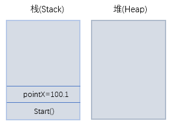

注：下面的示意图主要是为了辅助理解，不代表内存真实情况。
Introduction
类型基础是C#的基础概念，了解类型基础及背后的工作原理更有助于我们在编码的时候明白数据在内存中的分配与传递。C#提供了值类型和引用类型，值类型如struct, 引用类型如class。 这里主要说明一下它们在内存分配与传递上的区别。
一 内存分配
首先要了解一下内存中栈和堆的概念。
1. 栈（Stack）
##栈是一种先进后出的内存结构。
方法的调用追踪就是在栈上完成的。比如我们有一个main方法（程序入口）， 在main方法中会调用一个GetPoint的方法。在线程执行时，会将main方法压入栈底（包括编译好的方法指令，参数，和方法内部变量），然后再将GetPoint的方法压入栈底，GetPoint中没有调用其它方法，压栈完毕。出栈顺序是先进后出，也就是后进先出，栈顶的方法GetPoint先执行完毕，然后出栈，所占内存清空，接着main方法执行后出栈，所占内存清空。
//示意图：自己脑补吧...
从上面方法的压栈出栈中可以看出：
##栈只能在一端对数据进行操作，也就是栈顶端进行操作。’
##栈也是一种内存自我管理的结构，压栈自动分配内存，出栈自动清空所占内存。
另外值得注意的两点：
##栈中的内存不能动态请求，只能为大小确定的数据分配内存，灵活性不高，但是栈的执行效率很高。
##栈的可用空间并不大，所以我们在操作分配到栈上的数据时要注意数据的大小带来的影响。
2.堆（Heap）
##堆与栈有所区别，堆在C#中用于存储实实例对象，能存储大量数据，而且堆能够动态分配存储空间。
##相比栈只能在一端操作，堆中的数据可以随意存取。
##但堆的结构使得堆的执行效率不如栈高，而且不能自动回收使用过的对象。对于堆中的内存回收，C++程序员需要进行手动回收，这也是C++编程值得注意的一点，否则很容易造成内存溢出。而对于.NET程序员，平台提供了垃圾回收(GC)机制，可以自动回收堆中过期的对象（实现原理大概就是当发现没有“引用”指向此对象时，表明此对象可以回收，此文主要讨论值类型和引用类型，对于GC，感兴趣的可以搜索相关资料）。
3.值类型和引用类型在栈和堆中的分配
这儿有两个原则：
（1）创建引用类型时，runtime会为其分配两个空间，一块空间分配在堆上，存储引用类型本身的数据，另一个块空间分配在栈上，存储对堆上数据的引用（实际上存储的堆上的内存地址，也就是指针）。
（2）创建值类型时， runtime会为其分配一个空间，这个空间分配在变量创建的地方，如：
##如果值类型是在方法内部创建，则跟随方法入栈，分配到栈上存储。
##如果值类型是引用类型的成员变量，则跟随引用类型，存储在堆上。
在此我们举例说明。
定义一个Point类：
public class Point { public double PointX { get; set; } public double PointY { get; set; } }
StartProgram类，有方法Start()和InitialPoint()：
class StartProgram { void Start() { double pointX = 100.1; InitialPoint(pointX); } void InitialPoint(double pointX) { var point = new Point(); point.PointX = pointX; } }
示例分析：假设主线程从Start()进入执行，我们从分析一下方法中的变量在内存中的大致分配情况，不深究细节。
首先将Start()方法指令压入栈底，然后压入局部变量pointX；紧接着将InitialPoint()方法压入栈底，形参pointX压入栈底，在堆上实例化Point对象(包括其成员变量PointX和PointY)，并在栈上创建point变量指向堆上的Point对象，最后给成员变量PointX赋值，参考图如下：
注：注意不要混淆code中的pointx，虽然变量名相同，但是它们是不同的变量。

二 数据传递
1.按值传递原则
在C#中数据传递默认按值传递，先看一个示例。
现在有一个结构体PointSturct， 一个类PointClass：
public struct PointStruct { public double PointX { get; set; } public double PointY { get; set; } }
public class PointClass { public double PointX { get; set; } public double PointY { get; set; } }
并在一个方法中执行执行以下代码：
1 void Excute() 2 { 3 var pointStruct1 = new PointStruct(); 4 var pointClass1 = new PointClass(); 5 var pointStruct2 = pointStruct1; 6 var pointClass2 = pointClass1; 7 }
示例分析：第3，4行代码分别创建了一个结构体pointStruct1和一个类实例pointClass1, 结合上面的内存分配规则，对于pointSturct1，会在栈上分配内存存储其数据本身，对于pointClass1，会在堆上分配内存存储实例，且在栈上存储指向实例的引用，参考图如下：
经过执行5，6行代码后，内存分配应该是怎样的呢？ 对于值类型（pointStruct1），会在栈上开辟一块新的空间，将数据复制一份新的过去，因此pointStruct2和pointStruct1是互相独立的，对其中一个的修改不会影响到另一个；对于引用类型（pointClass1），也会在栈上开辟一个新的空间，将栈上的引用复制到新的空间， 但是注意，此处复制的是栈上存储的引用，也就是说栈上的两个变量pointClass1和pointClass2虽然是不同的空间，但是它们存储的引用， 都是指向堆上的同一实例，所以当通过pointClass2对实例的数据进行修改以后，通过pointClass1再访问实例的数据，将会是修改过的数据，反之亦然。对于复制引用，我们打个比方，假如把堆上的实例比作学校，A同学记录了学校的地址（引用），现在又来了B同学，复制引用就好比A同学把学校的地址抄了一份给B同学。参考图如下：
2.参数传递
当程序中进行参数传递的时候，也是默认按值传递，值类型复制数据本身，形成独立的数据块，引用类型复制引用，指向同一实例。
我们将之前的StartProgram类中的方法改成如下 ：
class StartProgram { void Start() { double pointX1 = 100.1; var point1 = new Point(); point1.PointX = 200.1; InitialPoint(pointX1, point1); Console.WriteLine(string.Format("pointX1:{0}", pointX1)); Console.WriteLine(string.Format("point1.PointX:{0}", point1.PointX)); Console.ReadKey(); } void InitialPoint(double pointX2, Point point2) { pointX2 = 300.1; point2.PointX = pointX2; } } /*Output:pointX1:100.1 point1.PointX:300.1
*/
示例分析：从输出结果可以看到，pointX1还是原来的值，没有受到pointX2影响，而point1.PointX的值是point2对PointX更改后的值。在内存中，将值类型pointX1传递给pointX2后，在栈上形成两个独立的内存块，因此对pointX2更改后，并不会影响到pointX1；而对于引用类型point1，传递给point2后，它们两块内存存储的引用指向同一实例，因此再InitialPoint()方法内对point2.PointX赋值为300.1后，再Start()方法里面取point1取PointX的值，也是300.1。
既然point1和point2指向同一实例，那么如果我们在InitialPoint()方法的最后将point2设置为null，会不会影响到Start()方法里的point1呢？用point.PointX取值的时候，会不会得到实例为null的异常呢？
void InitialPoint(double pointX2, Point point2) { pointX2 = 300.1; point2.PointX = pointX2; point2 = null; } /*Output:pointX1:100.1 point1.PointX:300.1 */
示例分析：还是会得到之前的结果，没有检测到null异常。这是因为point2设置为null的含义是，并不是将堆上的实例变为null，而是设置栈上的引用为null，注意，这和上一句代码point2.PointX = pointX2是有区别的，上一句代码的含义是，通过point2引用找到堆上的实例，对其属性PointX进行更新。将point2设置为null后，point1仍然指向堆上的实例，因此可以访问到更新后的实例属性值。
我们也用上面的学校作类比，学校表示堆上的实例，A同学和B同学都有学校的地址（引用），将point2设置为null，就相当于销毁B同学的地址，让B同学找不到学校了，但是A同学仍然可以去学校，以及可以看到B同学之前在学校完成的作业（point2设置为null之前对实例数据的更新）。
参考图如下：
3.按引用传递（Ref和Out关键字）
注：Ref和Out的区别在于Ref在传递前需要初始化。
我们知道C#中的Ref和Out关键字可以在值类型的传参上实现跟引用类型一样的效果，那么在引用类型参数上加入ref和out关键字跟默认的引用类型传参有什么区别呢？很多人觉得应该没有什么用，其实不然，我们继续将StartProgram类的方法改为按ref传递，看看会有什么不同。
class StartProgram {void Start() { double pointX1 = 100.1; var point1 = new Point(); point1.PointX = 200.1; InitialPoint(ref pointX1, ref point1); Console.WriteLine(string.Format("pointX1:{0}", pointX1)); if (point1 != null) Console.WriteLine(string.Format("point1.PointX:{0}", point1.PointX)); else Console.WriteLine(string.Format("point1 is null")); Console.ReadKey(); } void InitialPoint(ref double pointX2, ref Point point2) { pointX2 = 300.1; point2.PointX = pointX2; point2 = null; } /*Output:
pointX1:300.1 point1 is null */
}
示例分析：从运行结果可以看到，对于值类型， pointX2对值的更改影响到了pointX1；对于引用类型，将point2设置为null后，point1也变成了null，之前我们没有加ref参数的时候，point2设置为null，并不会影响到point1本身。我们可以看到，通过加入ref和out参数后，在内存中并不是像值传递一样将栈上的数据拷贝一份到新的空间。在这里，我并没有去研究C#对ref和out参数在内存上的实现原理，有兴趣的可以深入研究。
Summary
本文从内存中栈和堆的结构特点出发，分析了C#值类型和引用类型在栈和堆上的分配情况，接着分析了数据传递过程，包括按值传递（赋值，参数传递），按引用传递（ref，out关键字），仅供参考。